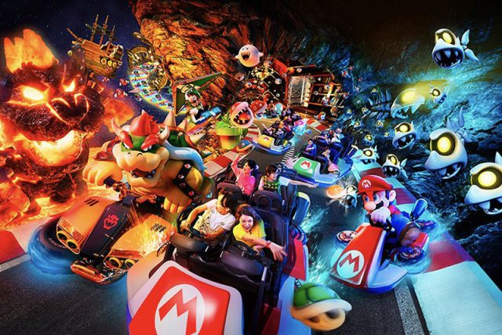

14 janvier 2021, 14h19 par Coline

Il aura fallu plusieurs années et près de 500 millions d’euros pour créer ce qui pourrait devenir
l’un des univers les plus prisés du parc Universal Studios Japon, à Osaka : Super Nintendo World. Cet espace entièrement aux couleurs des
jeux emblématiques de Nintendo s’annonce comme particulièrement attrayant pour les fans de la marque et ils sont nombreux.
Alors que l’on avait déjà pu voir les esquisses puis des vidéos, ce sont les images officielles du lieu qui sont désormais disponibles et
elles impressionnent tant le résultat est fidèle aux schémas originaux au point d’en paraitre quasi irréels. Un peu comme si un décor et un
environnement initialement numériques mais devenus matériels n’attendaient plus que vous pour embarquer dans des jeux vidéos grandeur nature.